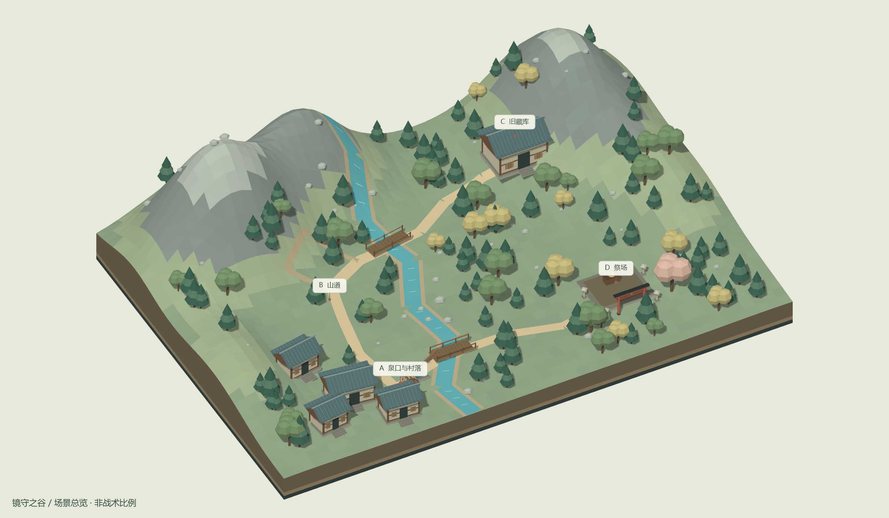
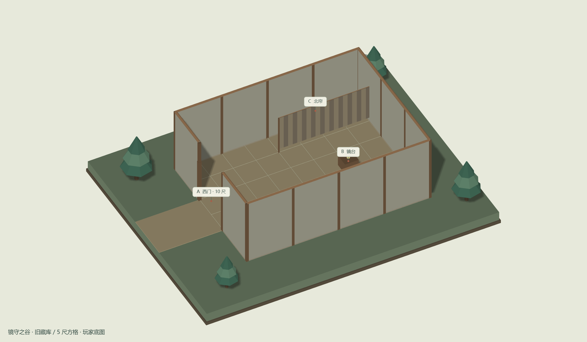
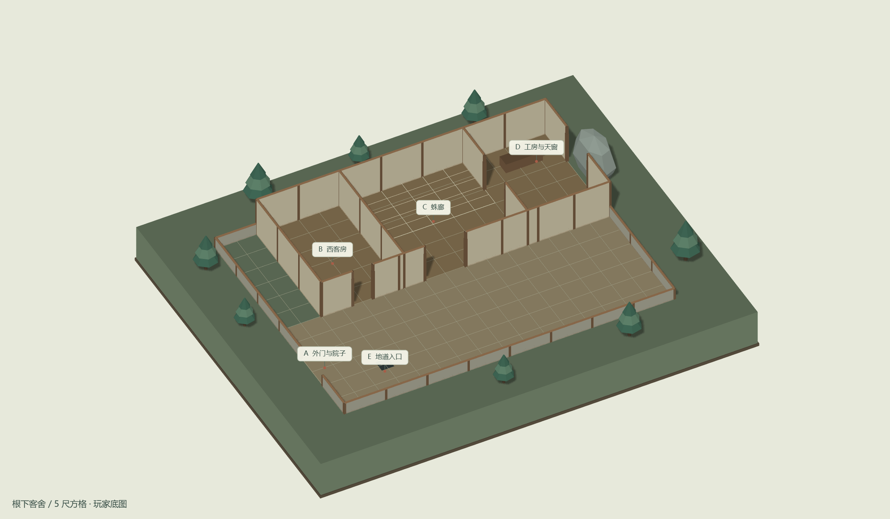
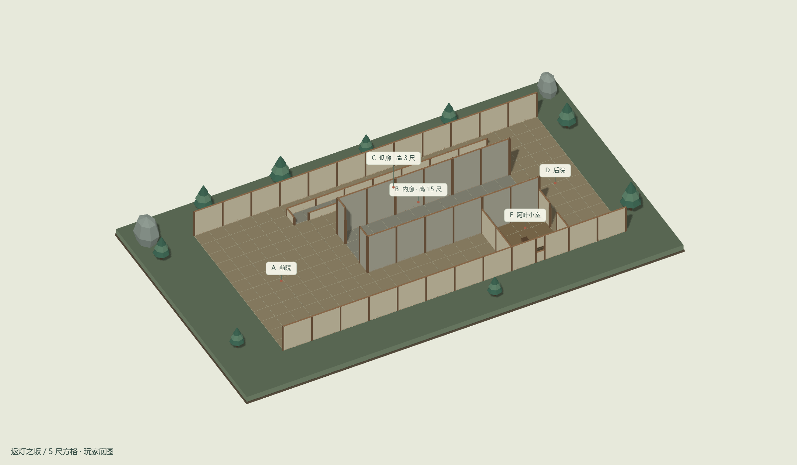
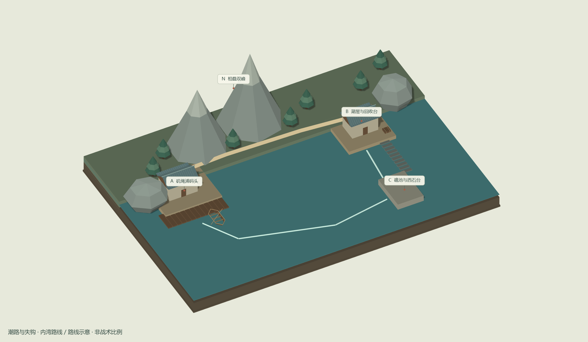
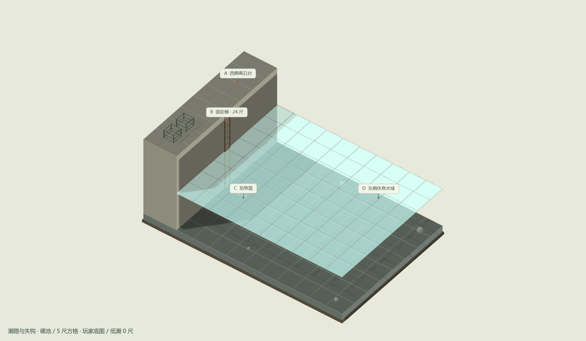
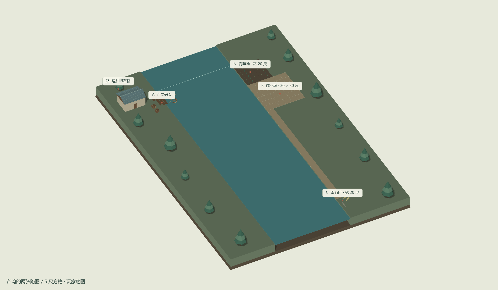

旋转查看 ↗镜守之谷 · 山谷总览
泉口 · 村落 · 山道 · 藏库 · 祭场
新版归灯之夜复用旧版七张立体地图。
旋转查看树木、山体与房屋；揭开屋顶进入室内，切换潮位和地道剖面。

旋转查看 ↗泉口 · 村落 · 山道 · 藏库 · 祭场

旋转查看 ↗40 × 30 尺 / 室内高 15 尺

旋转查看 ↗80 × 60 尺 / 房高 10 尺 / 地道 70 尺

旋转查看 ↗前院 · 60 尺内廊 · 后院 · 小室

旋转查看 ↗双峰为标 · 三处停靠 · 依正文行程

旋转查看 ↗60 × 40 尺 / 低潮深 12 尺 · 高潮深 22 尺

旋转查看 ↗60 尺水面 / 120 尺田埂 / 渠深 6 尺